My Research
My research covers mental health and substance use, maternal and child health, nutrition, sleep, housing and water and sanitation, in Canada, Bangladesh and Mozambique. Most of it uses large population surveys and administrative health data.
38peer-reviewed publications
25as lead author
600+citations
16h-index
Publications
Newest first · click any paper to read itShowing all 38 papers
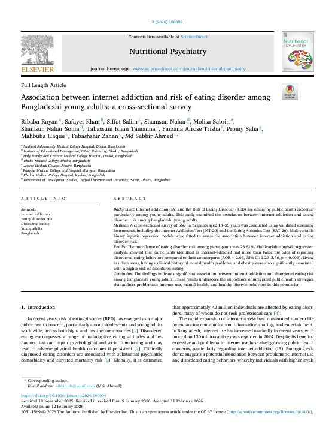
Nutritional Psychiatry2026
Association between internet addiction and risk of eating disorder among the Bangladeshi young adults: a cross-sectional survey
Senior authorRead article
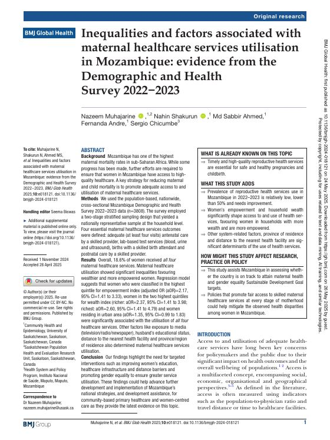
BMJ Global Health2025
Inequalities and factors associated with maternal healthcare services utilisation in Mozambique: evidence from the Demographic and Health Survey 2022−2023
Co-authorRead article
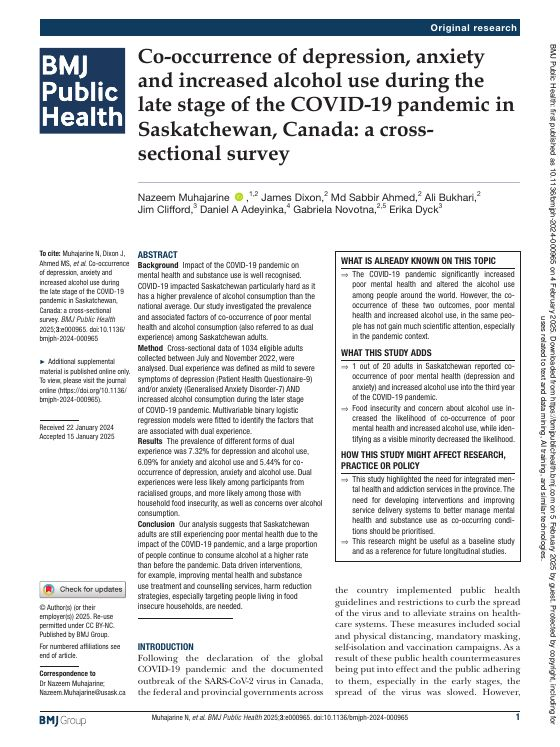
BMJ Public Health2025
Co-occurrence of depression, anxiety and increased alcohol use during the late stage of the COVID-19 pandemic in Saskatchewan, Canada: a cross-sectional survey
Co-authorRead article
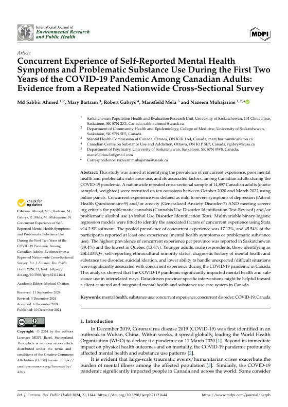
International Journal of Environmental Research and Public Health2024
Concurrent Experience of Self-Reported Mental Health Symptoms and Problematic Substance Use During the First Two Years of the COVID-19 Pandemic Among Canadian Adults: Evidence from a Repeated Nationwide Cross-Sectional Survey
Lead authorRead article
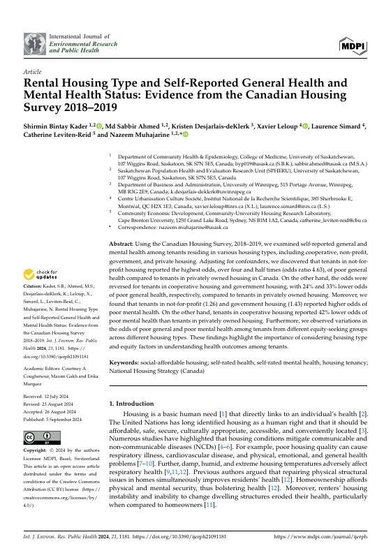
International Journal of Environmental Research and Public Health2024
Rental Housing Type and Self-Reported General Health and Mental Health Status: Evidence from the Canadian Housing Survey 2018–2019
Co-authorRead article
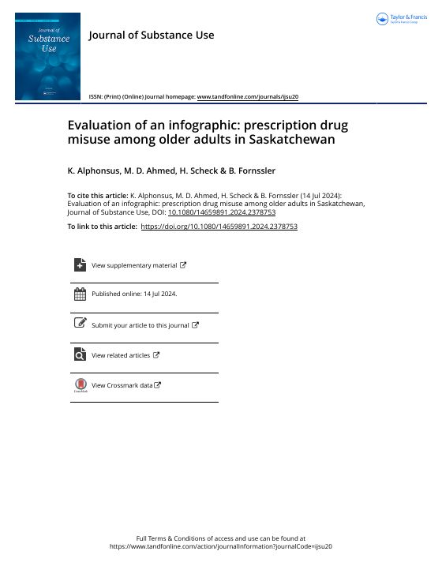
Journal of Substance Use2024
Evaluation of an infographic: prescription drug misuse among older adults in Saskatchewan
Co-authorRead article
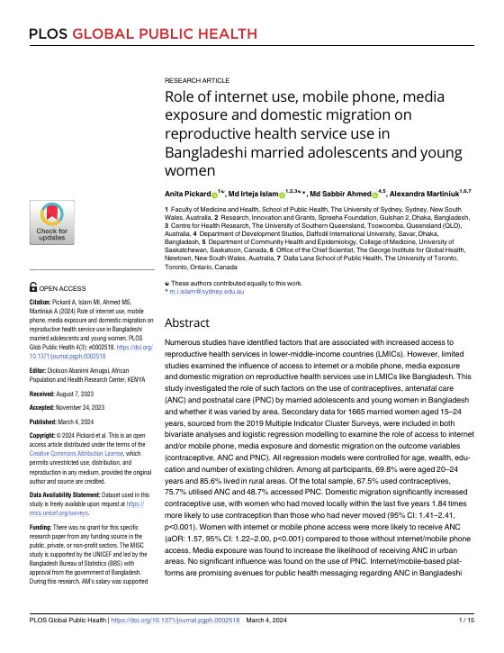
PLOS Global Public Health2024
Role of internet use, mobile phone, media exposure and domestic migration on reproductive health service use in Bangladeshi married adolescents and young women
Co-authorRead article
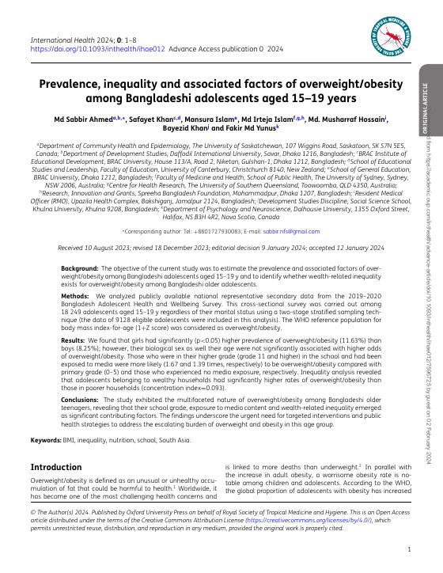
International Health2024
Prevalence, inequality and associated factors of overweight/obesity among Bangladeshi adolescents aged 15–19 years
Lead authorRead article
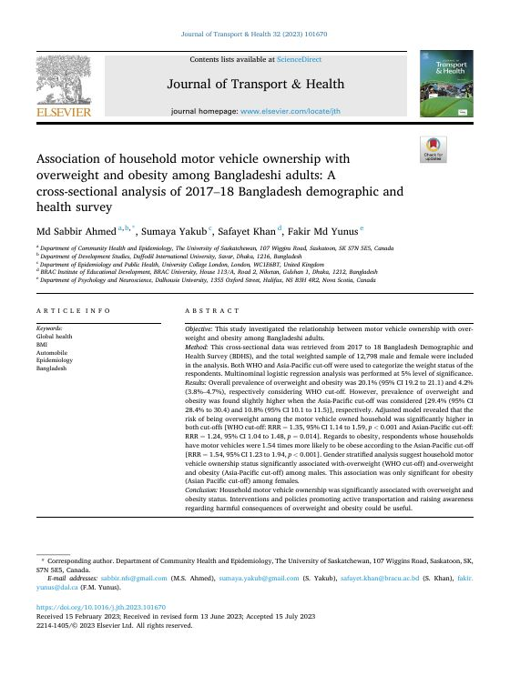
Journal of Transport & Health2023
Association of household motor vehicle ownership with overweight and obesity among Bangladeshi adults: A cross-sectional analysis of 2017–18 Bangladesh demographic and health survey
Lead authorRead article
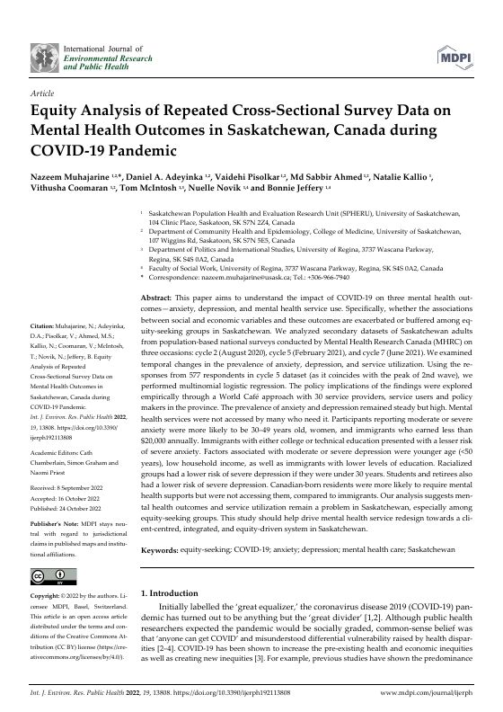
International Journal of Environmental Research and Public Health2022
Equity Analysis of Repeated Cross-Sectional Survey Data on Mental Health Outcomes in Saskatchewan, Canada during COVID-19 Pandemic
Co-authorRead article
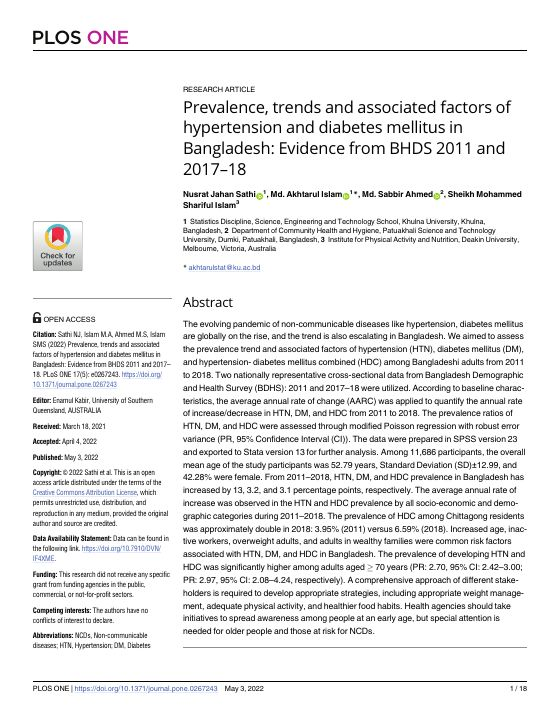
PLOS ONE2022
Prevalence, trends and associated factors of hypertension and diabetes mellitus in Bangladesh: Evidence from BHDS 2011 and 2017–18
Co-authorRead article
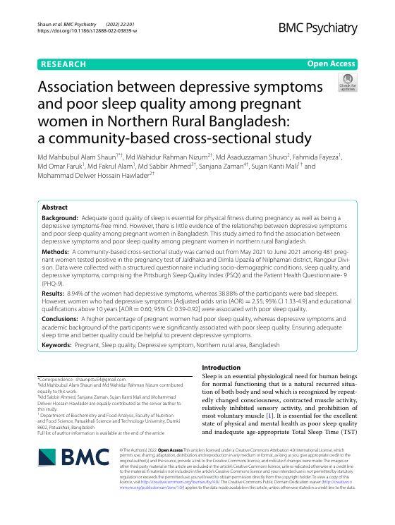
BMC Psychiatry2022
Association between depressive symptoms and poor sleep quality among pregnant women in Northern Rural Bangladesh: a community-based cross-sectional study
Co-authorRead article
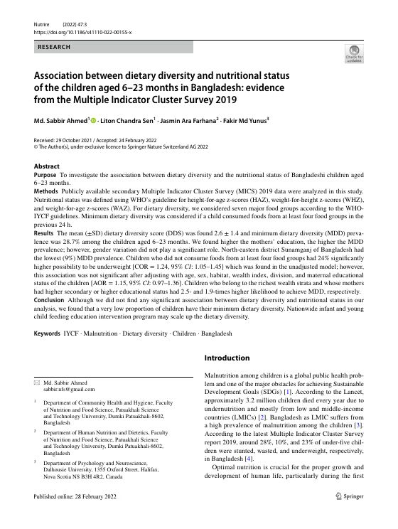
Nutrire2022
Association between dietary diversity and nutritional status of the children aged 6–23 months in Bangladesh: evidence from the Multiple Indicator Cluster Survey 2019
Lead authorRead article
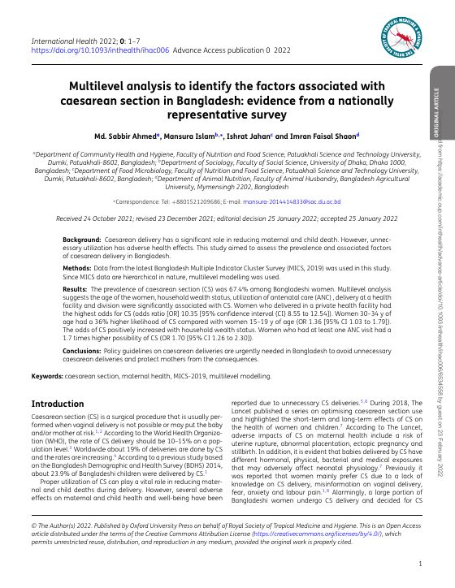
International Health2022
Multilevel analysis to identify the factors associated with caesarean section in Bangladesh: evidence from a nationally representative survey
Lead authorRead article
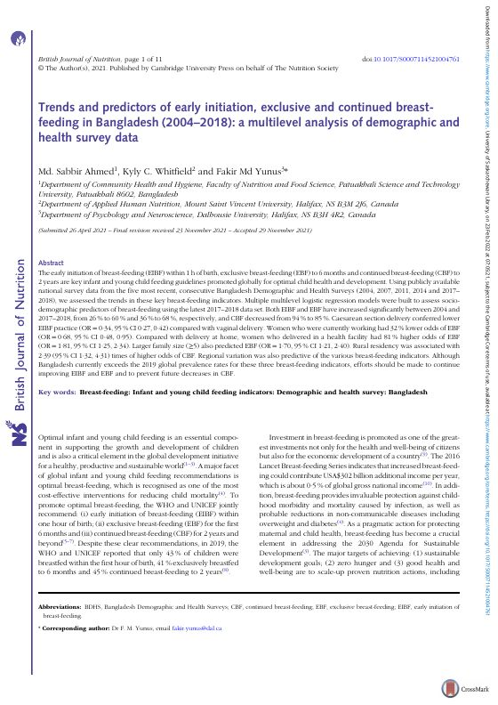
British Journal of Nutrition2021
Trends and predictors of early initiation, exclusive, and continued breastfeeding in Bangladesh (2004-2018): a multilevel analysis of Demographic and Health Survey data
Lead authorRead article
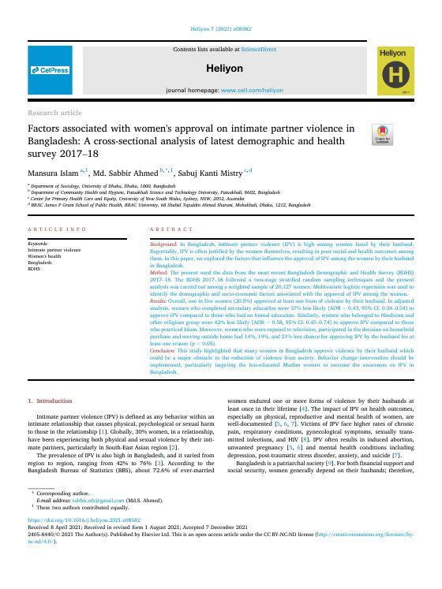
Heliyon2021
Factors associated with women’s approval on intimate partner violence in Bangladesh: A cross-sectional analysis of latest demographic and health survey 2017–18
Co-authorRead article
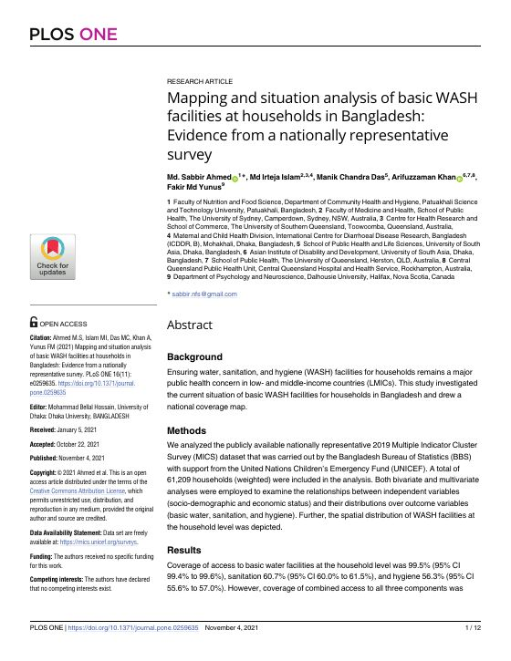
PLOS ONE2021
Mapping and situation analysis of basic WASH facilities at households in Bangladesh: Evidence from a nationally representative survey
Lead authorRead article
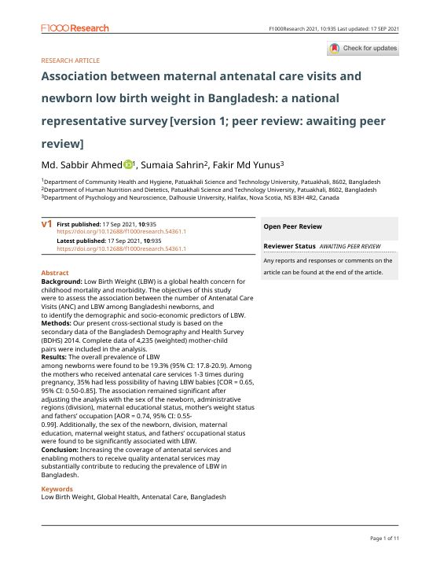
F1000Research2021
Association between maternal antenatal care visits and newborn low birth weight in Bangladesh: a national representative survey
Lead authorRead article
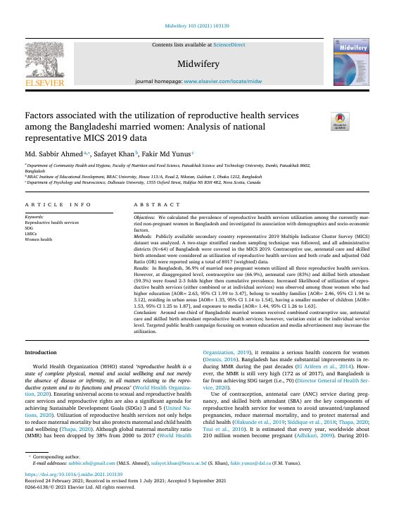
Midwifery2021
Factors associated with the utilization of reproductive health services among the Bangladeshi married women: analysis of national representative MICS 2019 data
Lead authorRead article
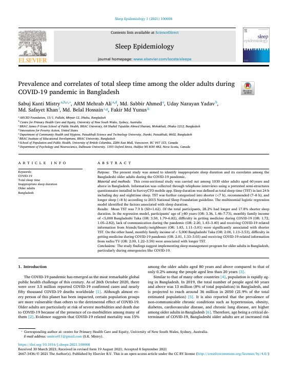
Sleep Epidemiology2021
Prevalence and correlates of total sleep time among the older adults during COVID-19 pandemic in Bangladesh
Co-authorRead article
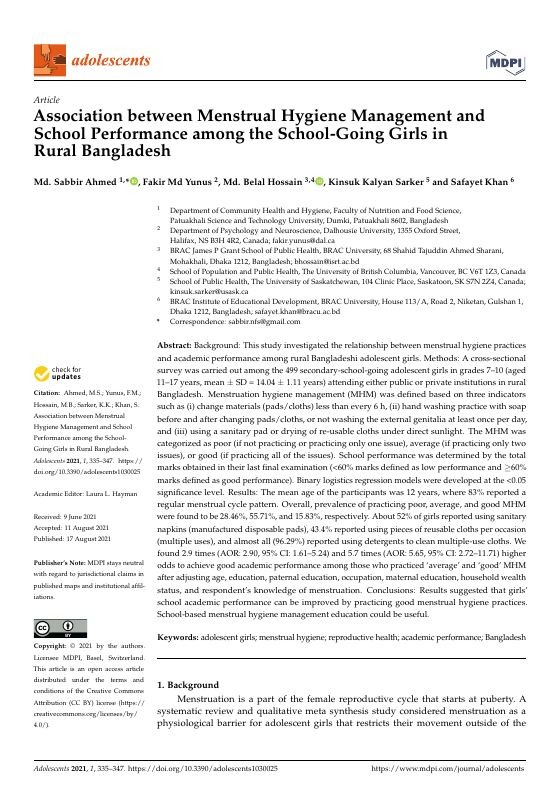
Adolescents2021
Association between menstrual hygiene management and school performance among the school-going girls in rural Bangladesh
Lead authorRead article
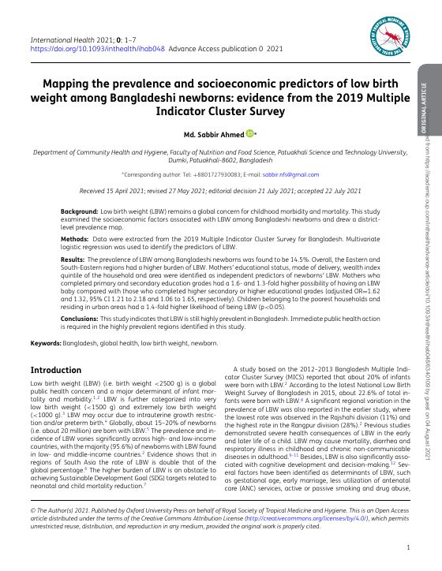
International Health2021
Mapping the prevalence and socioeconomic predictors of low birth weight among Bangladeshi newborns: evidence from the 2019 Multiple Indicator Cluster Survey
Lead authorRead article
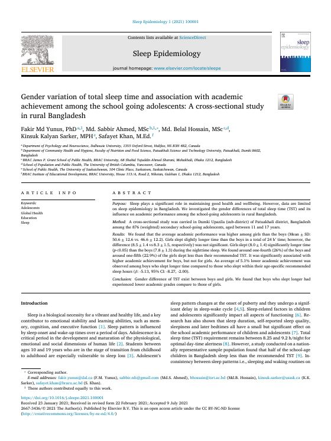
Sleep Epidemiology2021
Gender variation of total sleep time and association with academic achievement among the school going adolescents: A cross-sectional study in rural Bangladesh
Co-authorRead article
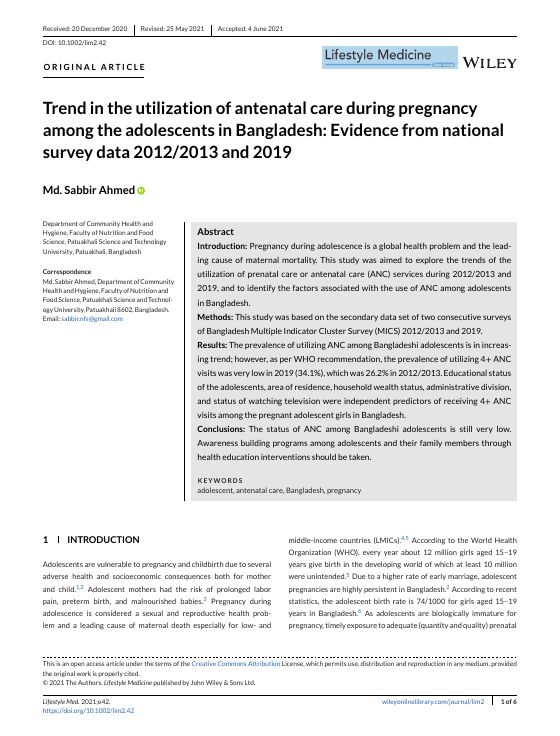
Lifestyle Medicine2021
Trend in the utilization of antenatal care during pregnancy among the adolescents in Bangladesh: Evidence from national survey data 2012/2013 and 2019
Lead authorRead article
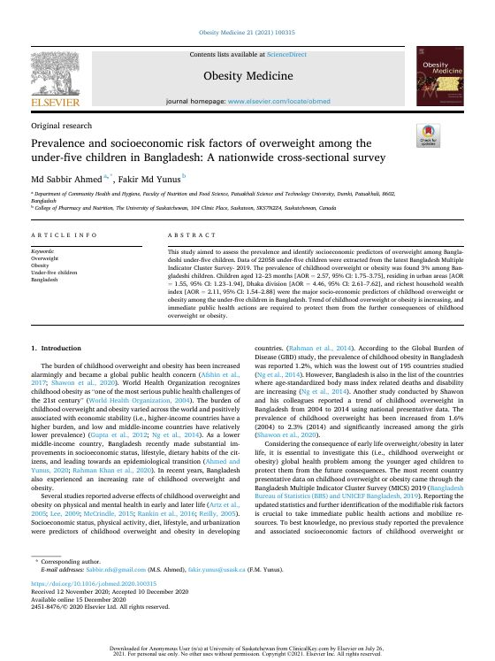
Obesity Medicine2021
Prevalence and socioeconomic risk factors of overweight among the under-five children in Bangladesh: A nationwide cross-sectional survey
Lead authorRead article
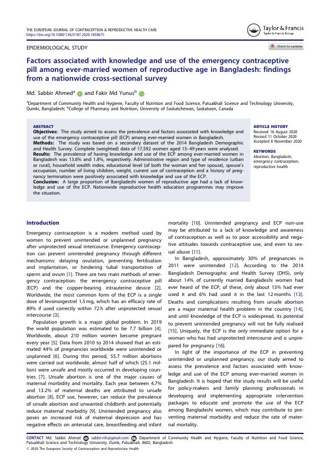
European Journal of Contraception & Reproductive Health Care2021
Factors associated with knowledge and use of the emergency contraceptive pill among ever-married women of reproductive age in Bangladesh: findings from a nationwide cross-sectional survey
Lead authorRead article
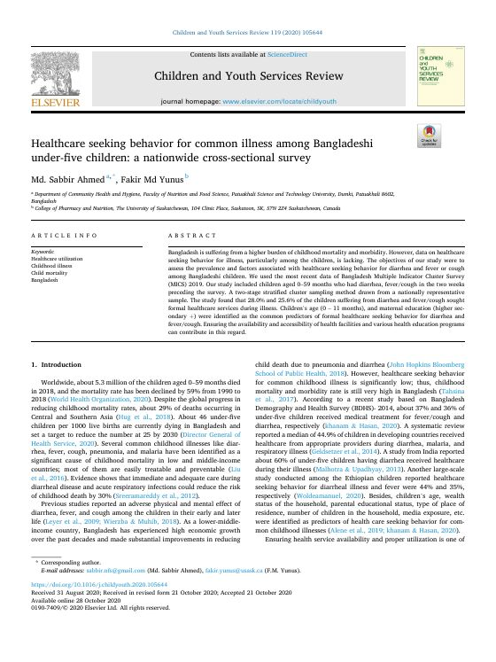
Children and Youth Services Review2020
Healthcare seeking behavior for common illness among Bangladeshi under-five children: a nationwide cross-sectional survey
Lead authorRead article
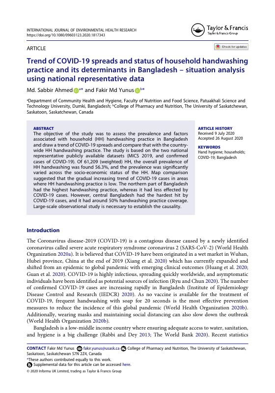
International Journal of Environmental Health Research2020
Trend of COVID-19 spreads and status of household handwashing practice and its determinants in Bangladesh – situation analysis using national representative data
Lead authorRead article
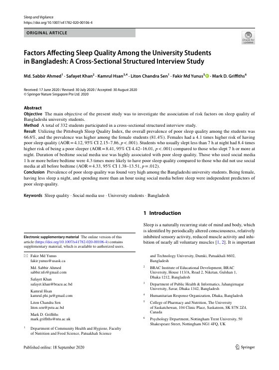
Sleep and Vigilance2020
Factors Affecting Sleep Quality Among the University Students in Bangladesh: A Cross-Sectional Structured Interview Study
Lead authorRead article
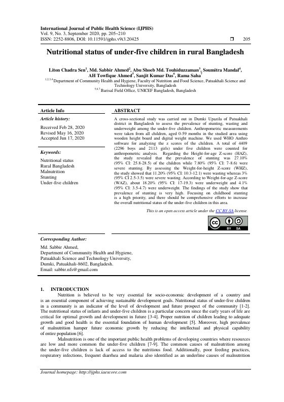
International Journal of Public Health Science2020
Nutritional status of under-five children in rural Bangladesh
Co-authorRead article
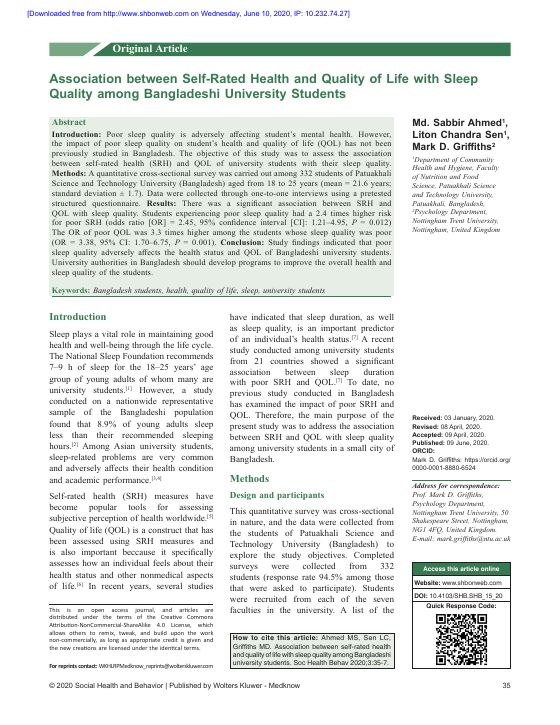
Social Health and Behavior2020
Association between self-rated health and quality of life with sleep quality among Bangladeshi university students
Lead authorRead article
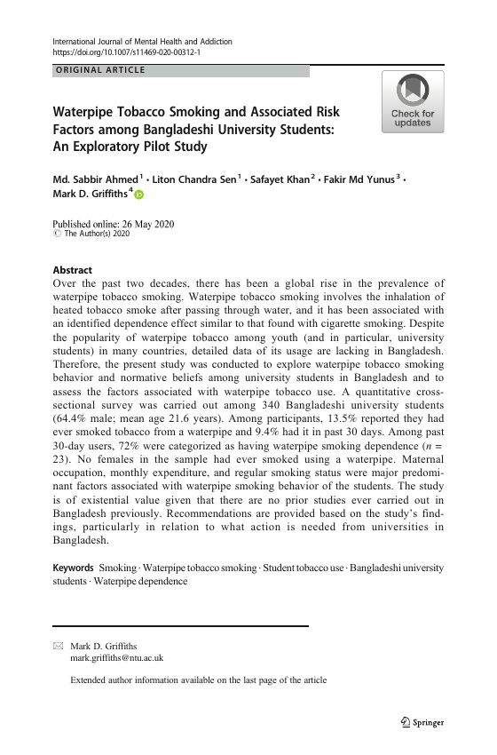
International Journal of Mental Health and Addiction2020
Waterpipe Tobacco Smoking and Associated Risk Factors among Bangladeshi University Students: An Exploratory Pilot Study
Lead authorRead article
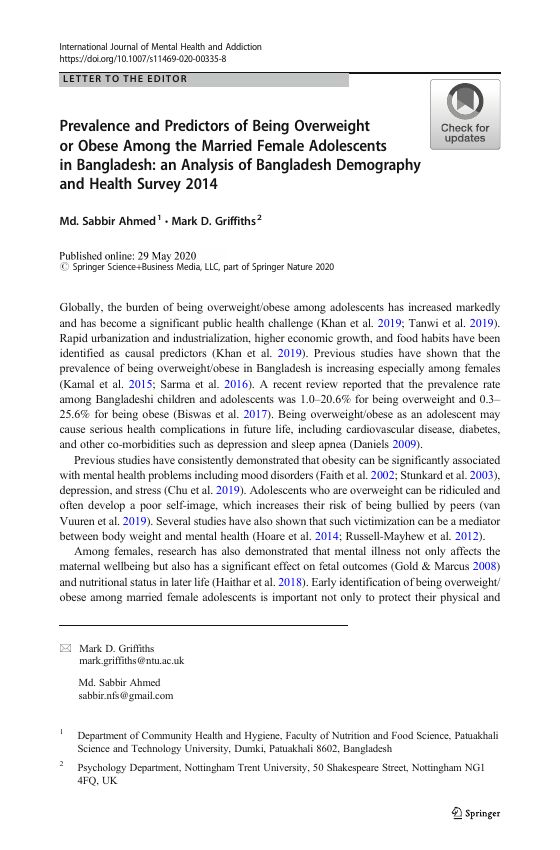
International Journal of Mental Health and Addiction2020
Prevalence and Predictors of Being Overweight or Obese Among the Married Female Adolescents in Bangladesh: An analysis of Bangladesh Demography and Health Survey 2014
Lead authorRead article
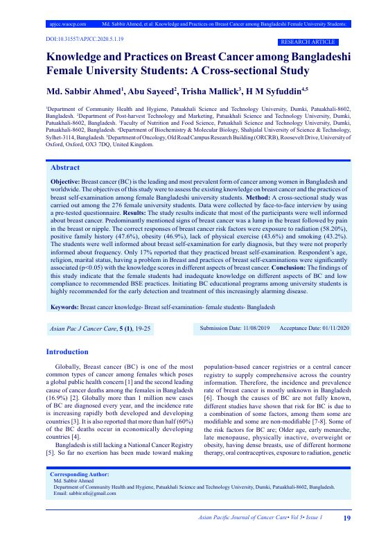
Asian Pacific Journal of Cancer Care2020
Knowledge and Practices on Breast Cancer among Bangladeshi Female University Students: A Cross-sectional Study
Lead authorRead article
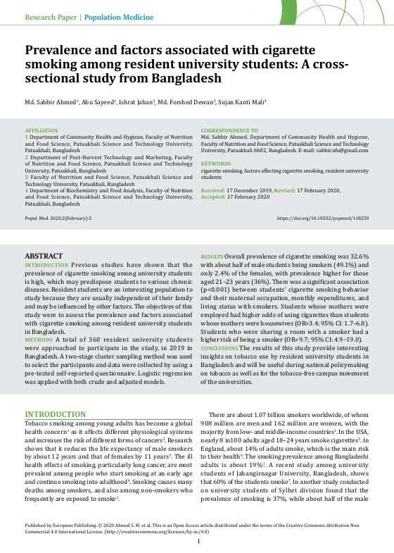
Population Medicine2020
Prevalence and factors associated with cigarette smoking among resident university students: A cross-sectional study from Bangladesh
Lead authorRead article
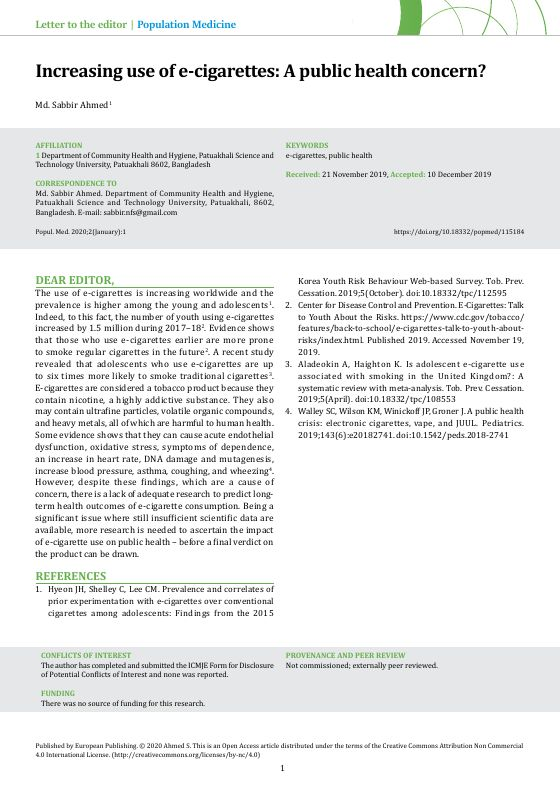
Population Medicine2020
Increasing Use of E-cigarettes: A Public Health Concern?
Lead authorRead article
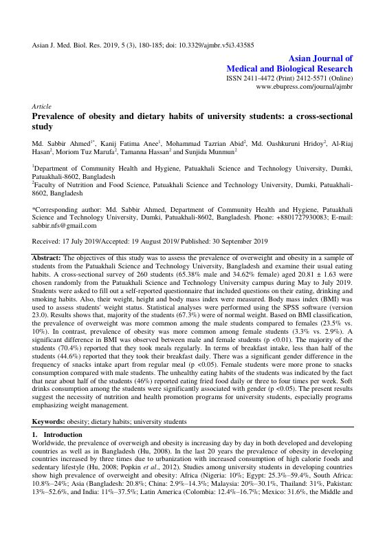
Asian Journal of Medical and Biological Research2019
Prevalence of obesity and dietary habits of university students: a cross-sectional study
Lead authorRead article
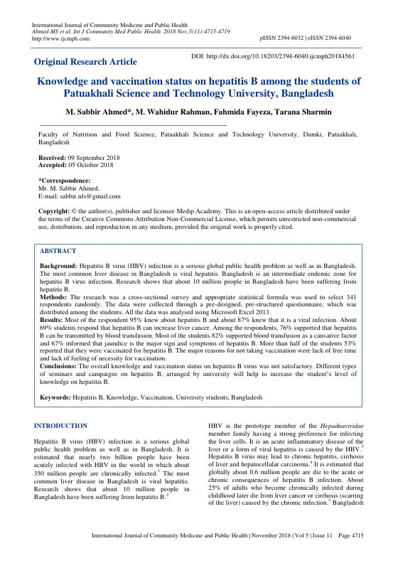
International Journal of Community Medicine and Public Health2018
Knowledge and vaccination status on hepatitis B among the students of Patuakhali Science and Technology University, Bangladesh
Lead authorRead article